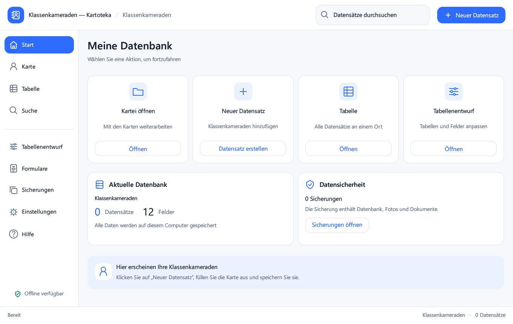

Datensatzkarten und Gesamttabelle mit anpassbaren Spaltenbreiten.
WINDOWS · RU / DE / EN · 0.5.0
Ihre lokale Kartei für Windows
Verwalten Sie Klassenkameraden und andere Listen auf Ihrem eigenen Computer. Karten, Tabellen, eigene Felder, Fotos, Dokumente, Suche und Sicherungen in einer Anwendung.
Lokale Daten. Kein Konto. Ohne verpflichtende Internetverbindung.

Funktionen
Eigene Tabellen und 11 Feldtypen: Text, Zahlen, Datum, Uhrzeit, Datum/Uhrzeit, Kontrollkästchen, URL, Foto und Dokument.
Fotovorschau, verwaltete lokale Dokumentkopien und Website-Links.
Suche in der ausgewählten Tabelle, Filter für geladene Zeilen und CSV-Export.
Sicherung von Datenbank und Anhängen; Schutzkopie vor einer Wiederherstellung.
Helle Oberfläche, 80–150% Skalierung, einklappbares Menü und RU/DE/EN.
Installation und Start
Starten Sie Kartoteka-0.5.0-Setup.exe und behalten Sie den vorgeschlagenen Benutzerordner. Administratorrechte und Rust sind nicht erforderlich. Speichern und schließen Sie die alte Anwendung vor einem Update. Ohne Installation: das gesamte portable ZIP entpacken; EXE und drei DLL-Dateien müssen zusammenbleiben.
Voraussetzungen und Grenzen
Auf Windows 11 x 64 geprüft. Die EXE ist nicht signiert. Die Tabelle zeigt bis zu 2000 Zeilen, die Suche bis zu 500 Treffer. Freie Formularanordnung und Microsoft-Access-Import sind nicht implementiert. Windows-DPI 125/150% und zwei Monitore sind nicht separat geprüft; die Schriftglättung hängt vom egui-Renderer ab. Keine Telemetrie; Kernfunktionen arbeiten offline.